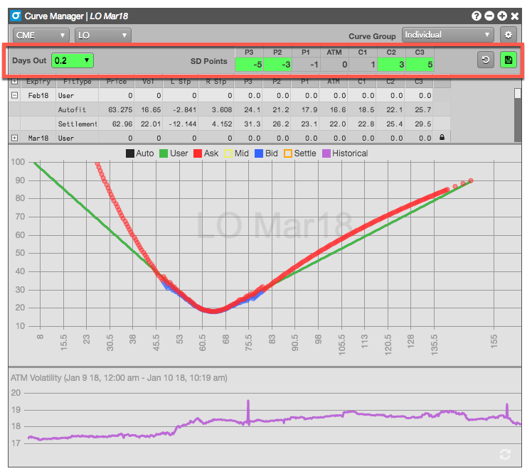
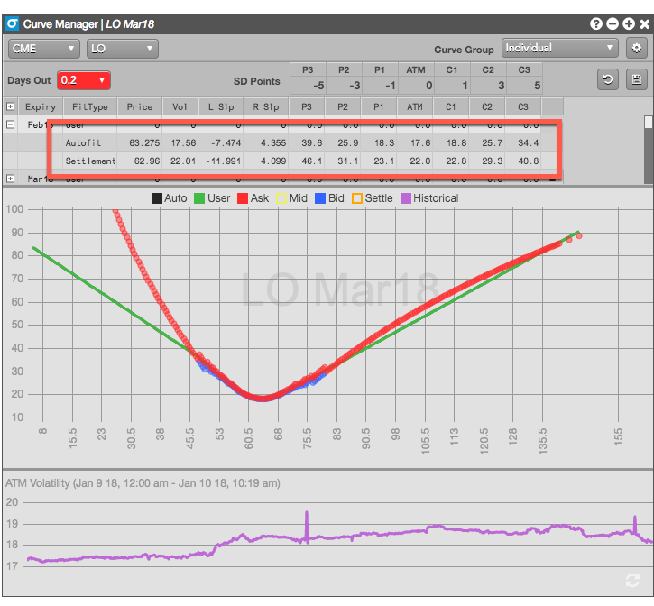

You can change the following parameters to set new values for calculating the volatility for all expiries associated with the selected product.
Note: These settings are applied globally for the selected product. The values will persist across new Vol Curve Manager widgets using the product and will be reflected in other options widgets, such as Options Chain, that calculate volatility for the same product. Additionally, the settings will be applied if you use the same product in other workspaces.
To change the default settings used for all expiries for the selected product:

Notice that the values used for the Autofit and Settlement curves settings automatically adjusted to reflected the new product-level settings. The curves themselves also updated to reflect the changes.